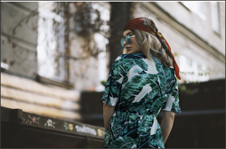
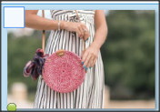

Jumpsuits are, without a doubt, a statement style. The head-to-toe, all-in-one garment creates a striking look that moves beyond a simple dress or pants and top combo, and into more fashionable territories. So why then, do so many women still avoid this trend-worthy style? Well, it isn't always the easiest piece of clothing to pull off. Choose the wrong fit or add the wrong accessories and your jumpsuit can go from a fashion hero to a fashion zero. Luckily, we're here to help make sure your every ensemble is seriously chic. Here is our guide on how to wear a jumpsuit like a street style star.
Choosing A Jumpsuit
Like dresses, jumpsuits come in many styles, so part of pulling off this look is all about finding the right jumpsuit for you. When shopping for a jumpsuit consider your needs. Are you after a casual jumpsuit to wear during the day or something more formal for an evening look? Do you need long sleeves to combat cold weather or will a strapless style help you beat the heat? Once you know your requirements, you can start focusing on the details. In general, styles that are fitted at the waist and then looser on the legs tend to be the most flattering. If you are tall, wide-leg jumpsuits that finish just above the ground will be highly complementary. If you are vertically challenged, you may want to opt for a slim, cropped style instead to avoid looking swamped in the fabric.
When To Wear A Jumpsuit
Formal Occasions
When attending formal occasions, women often fall into the mindset of thinking that a dress is their only option. While a dress may be the "safe" choice for dressing appropriately, it will rarely have the same impact as a jumpsuit. Jumpsuits can be just as beautiful and polished as a dress while offering an out-of-the-box wow factor that will earn you some serious style points. So for your next formal event try stepping out of your comfort zone and wear a jumpsuit. Choose a sleek and well-tailored style that flatters your figure, add some simple yet chic accessories, and you're ready to go.
Casual Occasions
If you're looking to add some serious style to your weekend wardrobe, you can't overlook a casual jumpsuit. Relaxed, super comfortable and oh-so-chic, the casual jumpsuit is the perfect item to get you out of your jeans and t-shirt rut. Choose from cotton and denim varieties in a range of silhouettes to find the one that suits your style. In particular, loose fit jumpsuits that feature an elasticated or drawstring waist tend to be universally flattering and perfect for jumpsuit virgins. If you plan to wear flats with your jumpsuit, remember to make sure you pick a cropped style boot or lace-up sandal that finishes at or slightly above the ankles. This will help create balance and keep the look lengthened and slim. Jumpsuit With High Heels While jumpsuits can be flattering, they also have a knack for pulling the eye downwards as you look at them, making you appear shorter than what you are. Wide leg and low-waisted jumpsuits, in particular, are notorious for turning average height women into mini versions of themselves. One of the best ways to combat this problem is by adding a pair of high heels to your look. The additional height that you will receive from the heels will help lengthen your legs and make you appear taller. Just make sure that you choose slim heels instead of chunky ones to keep the look slick and long.•For use on $25 off $100 discount card
Valid today only, 9/13/2018. Cannot be combined with other coupons and offers. Discount will be applied to current selling price. Employees not eligible. No adjustments to prior purchases. No cash value or rain checks issued. When you return an item, you will forfeit the discount applied to that item.
We all love a classic look, but basic outfits can be, well, basic. One way to switch up your everyday ensemble is to experiment with print mixing. It might be out of your comfort zone, but there is one mixed-print combo in particular that you really shouldn't be afraid to try: florals with stripes. These two iconic prints look so good together, they're basically complementary. Not quite sure how to pull it off? Follow these tricks, and you'll be mixing florals with stripes like it's no big deal in no time.
It's All About Balance
Not sure which stripes and florals to wear together? Balance the prints with each other. For example, if your skirt has a larger floral print, wear it with a shirt that has skinnier stripes. If the top has wider stripes, wear a skirt that has small florals. Start Small
If you’re just easing into the floral + stripes combo, take baby steps. Before going all out with a floral bottom and a striped top (or vice versa), stick to just your top. For example, pair a striped tee with a floral blazer or a floral scarf. You will still achieve the same contrarian look with ease.
Go Subtle
Stripes are so versatile, they're basically a neutral. They're even less noticeable when in lighter tones along the grayscale. A more dainty floral print or lighter stripes will ease you into the mixing game while still keeping your look innovative and experimental.
Intentional Contrast
Juxtaposition is what makes mixed prints work and not just because of patterns. Contrast can create balance between casual and fancy items, too. For example, the casual graphic tank with gray stripes tones down the dressy floral print. It’s the casual-meets-fancy contrast of prints that makes this outfit effortlessly cool and playful.